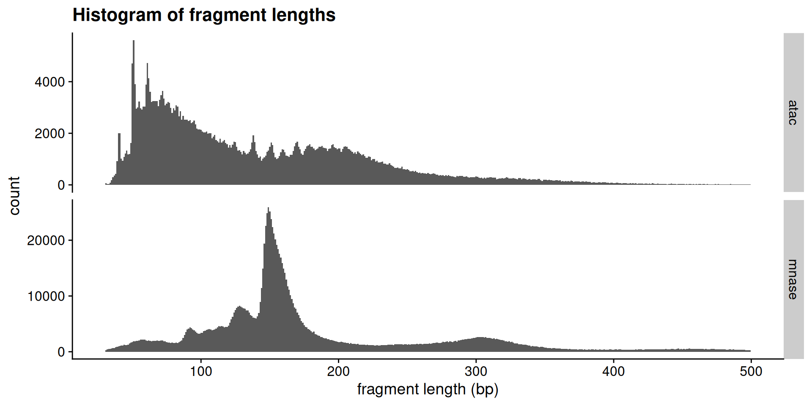
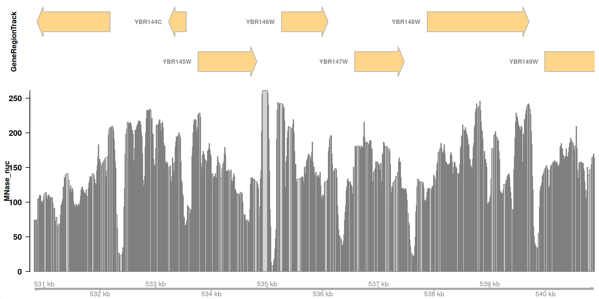
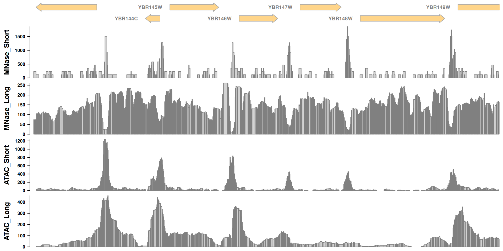

Chromatin accessibility I
Chromatin-centric measurement of genomic features
RNA Bioscience Initiative | CU Anschutz
2025-09-13
Chromatin accessbility patterns and genome function
This class we’ll examine chromatin accessibility patterns and begin to get a sense of what they mean, both at the fine-scale (single base-pair) and across the genome.
Load the libraries
These are libraries we’ve used before.
These are new libraries specifically for genome analysis. You learned about valr and Gviz for your homework.
rtracklayerprovides a few utility functions we’ll use todayTxDb.Scerevisiae.UCSC.sacCer3.sgdGeneprovides gene annotations for the S. cerevisiae genome.
Load the data
In this and the next class we will analyze ATAC-seq and MNase-seq data sets from budding yeast. Here are the references for the two data set:
ATAC-seq
Schep AN, Buenrostro JD, Denny SK, Schwartz K, Sherlock G, Greenleaf WJ. Structured nucleosome fingerprints enable high-resolution mapping of chromatin architecture within regulatory regions. Genome Res. 2015 PMID: 26314830; PMCID: PMC4617971. [Link] [Data]
MNase-seq
Zentner GE, Henikoff S. Mot1 redistributes TBP from TATA-containing to TATA-less promoters. Mol Cell Biol. 2013 PMID: 24144978; PMCID: PMC3889552. [Link] [Data]
Experimental consideration
In a standard MNase-seq experiment, DNA around ~150 bp is extracted to look closely at nucleosome occupancy & positioning. However, the above study did not perform size selection. This is important as now we can look at both transcription factor binding sites and nucleosome positions.
Fragment size distributions are informative
First, we will determine the fragment size distributions obtained from the two experiments. These sizes are the fingerprints of particles that were protecting nuclear DNA from digestion.
I have performed the alignment of paired-end reads and converted all reads into a bed file where each line of the bed file denotes a single fragment from start to end.
First, load the ATAC-seq reads:
Next, load the MNase reads.
# A tibble: 1,236,334 × 3
chrom start end
<chr> <int> <int>
1 chrII 1 228
2 chrII 2 80
3 chrII 3 226
4 chrII 4 60
5 chrII 4 66
6 chrII 4 77
7 chrII 4 81
8 chrII 5 56
9 chrII 5 60
10 chrII 5 60
# ℹ 1,236,324 more rowsWorking with a small genome is a huge advantage – we can study the whole chromosome in this class.
Expectations for chromatin fragment lengths
Let’s remind ourselves of the expectations for chromatin fragment lengths from MNase-seq and ATAC-seq experiments.
MNase-seq

ATAC-seq

Length distributions of chromatin-derived DNA fragments
For the MNase-seq BED file, you see that there are only three columns: chrom, start, and end.
Calculating fragment length is simple:
# A tibble: 1,236,334 × 4
chrom start end frag_len
<chr> <int> <int> <int>
1 chrII 1 228 227
2 chrII 2 80 78
3 chrII 3 226 223
4 chrII 4 60 56
5 chrII 4 66 62
6 chrII 4 77 73
7 chrII 4 81 77
8 chrII 5 56 51
9 chrII 5 60 55
10 chrII 5 60 55
# ℹ 1,236,324 more rowsLet’s use this approach to examine the fragment length distribution.
First, we will combine the two data sets into a single tibble, adding a new column to indicate the type of experiment.
# A tibble: 1,646,204 × 4
chrom start end type
<chr> <int> <int> <chr>
1 chrII 1 228 mnase
2 chrII 2 80 mnase
3 chrII 3 226 mnase
4 chrII 4 60 mnase
5 chrII 4 66 mnase
6 chrII 4 77 mnase
7 chrII 4 81 mnase
8 chrII 5 56 mnase
9 chrII 5 60 mnase
10 chrII 5 60 mnase
# ℹ 1,646,194 more rowsggplot(
acc_tbl,
# "end - start" is fragment length
aes(x = end - start)
) +
geom_histogram(
# single base-pair resolution
binwidth = 1
) +
facet_grid(
rows = vars(type),
scales = "free_y"
) +
xlim(30, 500) +
labs(
x = "fragment length (bp)",
title = "Histogram of fragment lengths"
) +
theme_cowplot()
Interpretations
How would you describe the two fragment length distributions? Are they similar?
Can you make any biological conclusions based on the length distributions?
Periodicity in the fragment lengths
The ATAC data seems to be periodic. How can we test that hypothesis? We can calculate the autocorrelation of the length distribution. Can someone explain what autocorrelation means?
We’ll use the base hist function to calculate the densities of the above histogram. Let’s write a function we can use to analyze fragment lengths.
$breaks
[1] 30 31 32 33 34 35 36 37 38 39 40 41 42
[14] 43 44 45 46 47 48 49 50 51 52 53 54 55
[27] 56 57 58 59 60 61 62 63 64 65 66 67 68
[40] 69 70 71 72 73 74 75 76 77 78 79 80 81
[53] 82 83 84 85 86 87 88 89 90 91 92 93 94
[66] 95 96 97 98 99 100 101 102 103 104 105 106 107
[79] 108 109 110 111 112 113 114 115 116 117 118 119 120
[92] 121 122 123 124 125 126 127 128 129 130 131 132 133
[105] 134 135 136 137 138 139 140 141 142 143 144 145 146
[118] 147 148 149 150 151 152 153 154 155 156 157 158 159
[131] 160 161 162 163 164 165 166 167 168 169 170 171 172
[144] 173 174 175 176 177 178 179 180 181 182 183 184 185
[157] 186 187 188 189 190 191 192 193 194 195 196 197 198
[170] 199 200 201 202 203 204 205 206 207 208 209 210 211
[183] 212 213 214 215 216 217 218 219 220 221 222 223 224
[196] 225 226 227 228 229 230 231 232 233 234 235 236 237
[209] 238 239 240 241 242 243 244 245 246 247 248 249 250
[222] 251 252 253 254 255 256 257 258 259 260 261 262 263
[235] 264 265 266 267 268 269 270 271 272 273 274 275 276
[248] 277 278 279 280 281 282 283 284 285 286 287 288 289
[261] 290 291 292 293 294 295 296 297 298 299 300 301 302
[274] 303 304 305 306 307 308 309 310 311 312 313 314 315
[287] 316 317 318 319 320 321 322 323 324 325 326 327 328
[300] 329 330 331 332 333 334 335 336 337 338 339 340 341
[313] 342 343 344 345 346 347 348 349 350 351 352 353 354
[326] 355 356 357 358 359 360 361 362 363 364 365 366 367
[339] 368 369 370 371 372 373 374 375 376 377 378 379 380
[352] 381 382 383 384 385 386 387 388 389 390 391 392 393
[365] 394 395 396 397 398 399 400 401 402 403 404 405 406
[378] 407 408 409 410 411 412 413 414 415 416 417 418 419
[391] 420 421 422 423 424 425 426 427 428 429 430 431 432
[404] 433 434 435 436 437 438 439 440 441 442 443 444 445
[417] 446 447 448 449 450 451 452 453 454 455 456 457 458
[430] 459 460 461 462 463 464 465 466 467 468 469 470 471
[443] 472 473 474 475 476 477 478 479 480 481 482 483 484
[456] 485 486 487 488 489 490 491 492 493 494 495 496 497
[469] 498 499 500
$counts
[1] 244 34 27 76 183 297 360 431 927 2006 1994
[12] 1019 931 1081 1218 1331 1182 1192 1621 4702 5604 3897
[23] 2960 3005 3227 2969 2917 3037 3031 3886 4729 4140 3616
[34] 3207 3241 3248 3256 3252 3050 3305 3483 3634 3343 3088
[45] 3142 3207 3189 2986 2787 2962 2895 3079 3037 2659 2857
[56] 2529 2669 2529 2523 2519 2476 2516 2396 2431 2496 2352
[67] 2175 2143 2144 2140 2060 2028 2042 2065 1993 1996 2003
[78] 1811 1875 1935 1733 1697 1642 1791 1644 1685 1745 1622
[89] 1573 1445 1546 1445 1555 1668 1659 1479 1329 1343 1277
[100] 1186 1310 1247 1181 1211 1283 1382 1642 1922 1661 1312
[111] 1187 1046 1096 942 1023 1075 1135 1287 1329 1473 1641
[122] 1537 1248 1073 1007 1031 1120 1260 1381 1357 1271 1138
[133] 1111 1091 1161 1162 1311 1499 1631 1668 1472 1372 1221
[144] 1164 1312 1397 1489 1533 1573 1475 1479 1419 1345 1380
[155] 1409 1475 1480 1506 1438 1432 1404 1307 1401 1404 1549
[166] 1568 1469 1428 1382 1417 1414 1274 1390 1474 1492 1479
[177] 1401 1380 1332 1274 1213 1264 1205 1298 1242 1194 1143
[188] 1177 1115 1057 1045 1101 1080 945 1006 1008 904 932
[199] 872 878 892 897 814 821 782 781 842 771 742
[210] 710 653 664 680 641 638 702 612 614 593 602
[221] 580 520 530 540 518 547 494 455 471 450 458
[232] 437 441 426 465 436 417 430 444 421 400 390
[243] 357 386 367 386 349 377 340 373 353 335 329
[254] 319 305 347 323 340 349 352 308 318 330 292
[265] 288 297 295 291 297 327 314 287 264 285 253
[276] 284 256 284 284 292 292 273 284 279 220 236
[287] 246 254 262 244 271 291 278 256 244 249 259
[298] 240 231 218 264 264 213 242 251 231 196 211
[309] 232 205 208 216 217 191 227 234 183 155 198
[320] 196 201 180 194 175 185 167 163 178 175 166
[331] 176 138 145 137 155 136 153 139 161 142 122
[342] 127 130 135 134 118 126 126 122 136 120 117
[353] 121 88 100 107 89 84 93 102 76 105 100
[364] 95 76 82 74 77 88 71 68 79 77 73
[375] 73 58 74 61 66 51 57 73 57 64 56
[386] 60 42 47 55 46 57 40 46 48 36 50
[397] 35 60 46 34 39 49 38 39 30 37 33
[408] 37 25 40 35 44 39 30 29 23 28 31
[419] 39 39 33 18 37 24 39 34 24 32 24
[430] 34 23 30 31 21 31 34 25 29 17 21
[441] 25 23 23 31 22 35 21 26 22 20 17
[452] 19 19 16 27 14 19 21 23 23 18 25
[463] 20 23 22 15 21 18 16 12
$density
[1] 5.955083e-04 8.298067e-05 6.589641e-05 1.854862e-04
[5] 4.466312e-04 7.248605e-04 8.786188e-04 1.051902e-03
[9] 2.262443e-03 4.895859e-03 4.866572e-03 2.486979e-03
[13] 2.272206e-03 2.638297e-03 2.972660e-03 3.248449e-03
[17] 2.884798e-03 2.909205e-03 3.956225e-03 1.147574e-02
[21] 1.367717e-02 9.511049e-03 7.224199e-03 7.334026e-03
[25] 7.875841e-03 7.246165e-03 7.119253e-03 7.412126e-03
[29] 7.397482e-03 9.484202e-03 1.154163e-02 1.010412e-02
[33] 8.825238e-03 7.827029e-03 7.910010e-03 7.927094e-03
[37] 7.946619e-03 7.936857e-03 7.443854e-03 8.066209e-03
[41] 8.500637e-03 8.869169e-03 8.158952e-03 7.536597e-03
[45] 7.668390e-03 7.827029e-03 7.783098e-03 7.287655e-03
[49] 6.801974e-03 7.229080e-03 7.065560e-03 7.514631e-03
[53] 7.412126e-03 6.489576e-03 6.972817e-03 6.172297e-03
[57] 6.513982e-03 6.172297e-03 6.157654e-03 6.147891e-03
[61] 6.042945e-03 6.140569e-03 5.847696e-03 5.933118e-03
[65] 6.091757e-03 5.740310e-03 5.308322e-03 5.230223e-03
[69] 5.232663e-03 5.222901e-03 5.027652e-03 4.949553e-03
[73] 4.983721e-03 5.039855e-03 4.864131e-03 4.871453e-03
[77] 4.888537e-03 4.419941e-03 4.576140e-03 4.722576e-03
[81] 4.229573e-03 4.141711e-03 4.007478e-03 4.371129e-03
[85] 4.012359e-03 4.112424e-03 4.258861e-03 3.958666e-03
[89] 3.839076e-03 3.526678e-03 3.773180e-03 3.526678e-03
[93] 3.795145e-03 4.070934e-03 4.048968e-03 3.609659e-03
[97] 3.243568e-03 3.277736e-03 3.116656e-03 2.894561e-03
[101] 3.197196e-03 3.043438e-03 2.882358e-03 2.955576e-03
[105] 3.131300e-03 3.372920e-03 4.007478e-03 4.690848e-03
[109] 4.053850e-03 3.202077e-03 2.897001e-03 2.552876e-03
[113] 2.674906e-03 2.299053e-03 2.496742e-03 2.623653e-03
[117] 2.770090e-03 3.141062e-03 3.243568e-03 3.595015e-03
[121] 4.005037e-03 3.751214e-03 3.045879e-03 2.618772e-03
[125] 2.457692e-03 2.516267e-03 2.733481e-03 3.075166e-03
[129] 3.370479e-03 3.311905e-03 3.102013e-03 2.777412e-03
[133] 2.711515e-03 2.662703e-03 2.833546e-03 2.835986e-03
[137] 3.199637e-03 3.658471e-03 3.980631e-03 4.070934e-03
[141] 3.592575e-03 3.348514e-03 2.979982e-03 2.840867e-03
[145] 3.202077e-03 3.409529e-03 3.634065e-03 3.741452e-03
[149] 3.839076e-03 3.599897e-03 3.609659e-03 3.463222e-03
[153] 3.282618e-03 3.368039e-03 3.438816e-03 3.599897e-03
[157] 3.612100e-03 3.675555e-03 3.509594e-03 3.494950e-03
[161] 3.426613e-03 3.189874e-03 3.419292e-03 3.426613e-03
[165] 3.780501e-03 3.826873e-03 3.585253e-03 3.485188e-03
[169] 3.372920e-03 3.458341e-03 3.451019e-03 3.109334e-03
[173] 3.392445e-03 3.597456e-03 3.641387e-03 3.609659e-03
[177] 3.419292e-03 3.368039e-03 3.250890e-03 3.109334e-03
[181] 2.960457e-03 3.084928e-03 2.940932e-03 3.167909e-03
[185] 3.031235e-03 2.914086e-03 2.789615e-03 2.872595e-03
[189] 2.721278e-03 2.579722e-03 2.550435e-03 2.687109e-03
[193] 2.635856e-03 2.306374e-03 2.455251e-03 2.460133e-03
[197] 2.206309e-03 2.274646e-03 2.128210e-03 2.142854e-03
[201] 2.177022e-03 2.189225e-03 1.986655e-03 2.003739e-03
[205] 1.908555e-03 1.906115e-03 2.054992e-03 1.881709e-03
[209] 1.810931e-03 1.732832e-03 1.593717e-03 1.620564e-03
[213] 1.659613e-03 1.564430e-03 1.557108e-03 1.713307e-03
[217] 1.493652e-03 1.498533e-03 1.447280e-03 1.469246e-03
[221] 1.415553e-03 1.269116e-03 1.293522e-03 1.317928e-03
[225] 1.264235e-03 1.335012e-03 1.205660e-03 1.110477e-03
[229] 1.149526e-03 1.098274e-03 1.117798e-03 1.066546e-03
[233] 1.076308e-03 1.039699e-03 1.134883e-03 1.064105e-03
[237] 1.017733e-03 1.049461e-03 1.083630e-03 1.027496e-03
[241] 9.762431e-04 9.518370e-04 8.712970e-04 9.420746e-04
[245] 8.957031e-04 9.420746e-04 8.517721e-04 9.201091e-04
[249] 8.298067e-04 9.103467e-04 8.615346e-04 8.176036e-04
[253] 8.029600e-04 7.785539e-04 7.443854e-04 8.468909e-04
[257] 7.883163e-04 8.298067e-04 8.517721e-04 8.590939e-04
[261] 7.517072e-04 7.761133e-04 8.054006e-04 7.126575e-04
[265] 7.028950e-04 7.248605e-04 7.199793e-04 7.102169e-04
[269] 7.248605e-04 7.980788e-04 7.663509e-04 7.004544e-04
[273] 6.443205e-04 6.955732e-04 6.174738e-04 6.931326e-04
[277] 6.247956e-04 6.931326e-04 6.931326e-04 7.126575e-04
[281] 7.126575e-04 6.662859e-04 6.931326e-04 6.809296e-04
[285] 5.369337e-04 5.759834e-04 6.003895e-04 6.199144e-04
[289] 6.394392e-04 5.955083e-04 6.614047e-04 7.102169e-04
[293] 6.784890e-04 6.247956e-04 5.955083e-04 6.077113e-04
[297] 6.321174e-04 5.857459e-04 5.637804e-04 5.320525e-04
[301] 6.443205e-04 6.443205e-04 5.198495e-04 5.906271e-04
[305] 6.125926e-04 5.637804e-04 4.783591e-04 5.149682e-04
[309] 5.662210e-04 5.003246e-04 5.076464e-04 5.271713e-04
[313] 5.296119e-04 4.661561e-04 5.540180e-04 5.711022e-04
[317] 4.466312e-04 3.782942e-04 4.832403e-04 4.783591e-04
[321] 4.905622e-04 4.393094e-04 4.734779e-04 4.271064e-04
[325] 4.515124e-04 4.075815e-04 3.978191e-04 4.344282e-04
[329] 4.271064e-04 4.051409e-04 4.295470e-04 3.368039e-04
[333] 3.538881e-04 3.343633e-04 3.782942e-04 3.319227e-04
[337] 3.734130e-04 3.392445e-04 3.929379e-04 3.465663e-04
[341] 2.977542e-04 3.099572e-04 3.172790e-04 3.294821e-04
[345] 3.270414e-04 2.879917e-04 3.075166e-04 3.075166e-04
[349] 2.977542e-04 3.319227e-04 2.928729e-04 2.855511e-04
[353] 2.953135e-04 2.147735e-04 2.440608e-04 2.611450e-04
[357] 2.172141e-04 2.050111e-04 2.269765e-04 2.489420e-04
[361] 1.854862e-04 2.562638e-04 2.440608e-04 2.318577e-04
[365] 1.854862e-04 2.001298e-04 1.806050e-04 1.879268e-04
[369] 2.147735e-04 1.732832e-04 1.659613e-04 1.928080e-04
[373] 1.879268e-04 1.781644e-04 1.781644e-04 1.415553e-04
[377] 1.806050e-04 1.488771e-04 1.610801e-04 1.244710e-04
[381] 1.391146e-04 1.781644e-04 1.391146e-04 1.561989e-04
[385] 1.366740e-04 1.464365e-04 1.025055e-04 1.147086e-04
[389] 1.342334e-04 1.122680e-04 1.391146e-04 9.762431e-05
[393] 1.122680e-04 1.171492e-04 8.786188e-05 1.220304e-04
[397] 8.542127e-05 1.464365e-04 1.122680e-04 8.298067e-05
[401] 9.518370e-05 1.195898e-04 9.274310e-05 9.518370e-05
[405] 7.321823e-05 9.030249e-05 8.054006e-05 9.030249e-05
[409] 6.101520e-05 9.762431e-05 8.542127e-05 1.073867e-04
[413] 9.518370e-05 7.321823e-05 7.077763e-05 5.613398e-05
[417] 6.833702e-05 7.565884e-05 9.518370e-05 9.518370e-05
[421] 8.054006e-05 4.393094e-05 9.030249e-05 5.857459e-05
[425] 9.518370e-05 8.298067e-05 5.857459e-05 7.809945e-05
[429] 5.857459e-05 8.298067e-05 5.613398e-05 7.321823e-05
[433] 7.565884e-05 5.125276e-05 7.565884e-05 8.298067e-05
[437] 6.101520e-05 7.077763e-05 4.149033e-05 5.125276e-05
[441] 6.101520e-05 5.613398e-05 5.613398e-05 7.565884e-05
[445] 5.369337e-05 8.542127e-05 5.125276e-05 6.345580e-05
[449] 5.369337e-05 4.881216e-05 4.149033e-05 4.637155e-05
[453] 4.637155e-05 3.904972e-05 6.589641e-05 3.416851e-05
[457] 4.637155e-05 5.125276e-05 5.613398e-05 5.613398e-05
[461] 4.393094e-05 6.101520e-05 4.881216e-05 5.613398e-05
[465] 5.369337e-05 3.660912e-05 5.125276e-05 4.393094e-05
[469] 3.904972e-05 2.928729e-05
$mids
[1] 30.5 31.5 32.5 33.5 34.5 35.5 36.5 37.5 38.5
[10] 39.5 40.5 41.5 42.5 43.5 44.5 45.5 46.5 47.5
[19] 48.5 49.5 50.5 51.5 52.5 53.5 54.5 55.5 56.5
[28] 57.5 58.5 59.5 60.5 61.5 62.5 63.5 64.5 65.5
[37] 66.5 67.5 68.5 69.5 70.5 71.5 72.5 73.5 74.5
[46] 75.5 76.5 77.5 78.5 79.5 80.5 81.5 82.5 83.5
[55] 84.5 85.5 86.5 87.5 88.5 89.5 90.5 91.5 92.5
[64] 93.5 94.5 95.5 96.5 97.5 98.5 99.5 100.5 101.5
[73] 102.5 103.5 104.5 105.5 106.5 107.5 108.5 109.5 110.5
[82] 111.5 112.5 113.5 114.5 115.5 116.5 117.5 118.5 119.5
[91] 120.5 121.5 122.5 123.5 124.5 125.5 126.5 127.5 128.5
[100] 129.5 130.5 131.5 132.5 133.5 134.5 135.5 136.5 137.5
[109] 138.5 139.5 140.5 141.5 142.5 143.5 144.5 145.5 146.5
[118] 147.5 148.5 149.5 150.5 151.5 152.5 153.5 154.5 155.5
[127] 156.5 157.5 158.5 159.5 160.5 161.5 162.5 163.5 164.5
[136] 165.5 166.5 167.5 168.5 169.5 170.5 171.5 172.5 173.5
[145] 174.5 175.5 176.5 177.5 178.5 179.5 180.5 181.5 182.5
[154] 183.5 184.5 185.5 186.5 187.5 188.5 189.5 190.5 191.5
[163] 192.5 193.5 194.5 195.5 196.5 197.5 198.5 199.5 200.5
[172] 201.5 202.5 203.5 204.5 205.5 206.5 207.5 208.5 209.5
[181] 210.5 211.5 212.5 213.5 214.5 215.5 216.5 217.5 218.5
[190] 219.5 220.5 221.5 222.5 223.5 224.5 225.5 226.5 227.5
[199] 228.5 229.5 230.5 231.5 232.5 233.5 234.5 235.5 236.5
[208] 237.5 238.5 239.5 240.5 241.5 242.5 243.5 244.5 245.5
[217] 246.5 247.5 248.5 249.5 250.5 251.5 252.5 253.5 254.5
[226] 255.5 256.5 257.5 258.5 259.5 260.5 261.5 262.5 263.5
[235] 264.5 265.5 266.5 267.5 268.5 269.5 270.5 271.5 272.5
[244] 273.5 274.5 275.5 276.5 277.5 278.5 279.5 280.5 281.5
[253] 282.5 283.5 284.5 285.5 286.5 287.5 288.5 289.5 290.5
[262] 291.5 292.5 293.5 294.5 295.5 296.5 297.5 298.5 299.5
[271] 300.5 301.5 302.5 303.5 304.5 305.5 306.5 307.5 308.5
[280] 309.5 310.5 311.5 312.5 313.5 314.5 315.5 316.5 317.5
[289] 318.5 319.5 320.5 321.5 322.5 323.5 324.5 325.5 326.5
[298] 327.5 328.5 329.5 330.5 331.5 332.5 333.5 334.5 335.5
[307] 336.5 337.5 338.5 339.5 340.5 341.5 342.5 343.5 344.5
[316] 345.5 346.5 347.5 348.5 349.5 350.5 351.5 352.5 353.5
[325] 354.5 355.5 356.5 357.5 358.5 359.5 360.5 361.5 362.5
[334] 363.5 364.5 365.5 366.5 367.5 368.5 369.5 370.5 371.5
[343] 372.5 373.5 374.5 375.5 376.5 377.5 378.5 379.5 380.5
[352] 381.5 382.5 383.5 384.5 385.5 386.5 387.5 388.5 389.5
[361] 390.5 391.5 392.5 393.5 394.5 395.5 396.5 397.5 398.5
[370] 399.5 400.5 401.5 402.5 403.5 404.5 405.5 406.5 407.5
[379] 408.5 409.5 410.5 411.5 412.5 413.5 414.5 415.5 416.5
[388] 417.5 418.5 419.5 420.5 421.5 422.5 423.5 424.5 425.5
[397] 426.5 427.5 428.5 429.5 430.5 431.5 432.5 433.5 434.5
[406] 435.5 436.5 437.5 438.5 439.5 440.5 441.5 442.5 443.5
[415] 444.5 445.5 446.5 447.5 448.5 449.5 450.5 451.5 452.5
[424] 453.5 454.5 455.5 456.5 457.5 458.5 459.5 460.5 461.5
[433] 462.5 463.5 464.5 465.5 466.5 467.5 468.5 469.5 470.5
[442] 471.5 472.5 473.5 474.5 475.5 476.5 477.5 478.5 479.5
[451] 480.5 481.5 482.5 483.5 484.5 485.5 486.5 487.5 488.5
[460] 489.5 490.5 491.5 492.5 493.5 494.5 495.5 496.5 497.5
[469] 498.5 499.5
$xname
[1] "frag_lens"
$equidist
[1] TRUE
attr(,"class")
[1] "histogram"Autocorrelation
The density slot contains a vector of densities at base-pair resolution. We will use acf() to calculate the autocorrelation of these values, and will store the tidied result.
Autocorrelation
Now let’s plot the autocorrelation. First, we define a function.
And then we make the plot.
Autocorrelation

Autocorrelation
So, it looks like there significant bumps in autocorrelation at 10 and 21 bp positions, indicating that ATAC length distribution is periodic.
How do we confirm these bumps are interesting? Let’s calculate the acf of a negative control – the length distribution of the MNase data.
Autocorrelation
Interpretation
We can see a monotonic decrease in the MNase-seq data, which confirms that the bumps we see are distinctive features of ATAC-seq data.
What are these features? Consider that the specificity of binding of DNase, MNase, and Tn5 is not completely generic. These enzymes have specificity for the minor groove of DNA, and there is an optimal substrate geometry for cleavage. You can see this in previous studies, where DNase-seq revealed high-resolution views of DNA:protein structures.
So what then, exactly is the ~10-11 bp periodicity? And why is this not present in MNase data?
Molecular Picture of DNA accessibility

Visualize read density in genomic region
We will use Gviz to visualize read densities relative to a reference.
Load tracks
First, we load the gene annotations from the Saccharomyces Genome Databases (SGD).
GeneRegionTrack 'GeneRegionTrack'
| genome: sacCer3
| active chromosome: chrII
| annotation features: 7Import bigWig
Next, import the bigwig file containing yeast nucleosome-sized fragments (via MNase-seq) using rtracklayer::import.bw().
Inspect the object.
(What is “GRanges”?)
GRanges object with 81160 ranges and 1 metadata column:
seqnames ranges strand | score
<Rle> <IRanges> <Rle> | <numeric>
[1] chrII 10-19 * | 3.81086
[2] chrII 20-29 * | 3.81086
[3] chrII 30-39 * | 5.71629
[4] chrII 40-49 * | 5.71629
[5] chrII 50-59 * | 5.71629
... ... ... ... . ...
[81156] chrII 813130-813139 * | 15.24344
[81157] chrII 813140-813149 * | 7.62172
[81158] chrII 813150-813159 * | 7.62172
[81159] chrII 813160-813169 * | 7.62172
[81160] chrII 813170-813179 * | 5.71629
-------
seqinfo: 1 sequence from an unspecified genomeLoad track
Next, load the GRanges object as a track for Gviz to plot:
Vizualize a genomic region
Now, we can make a plot for this particular region of chrII:
Vizualize a genomic region

Load the remaining data
That looks great! Let’s load all the other data sets.
- Load each bigWig as a GRanges object with
rtracklayer::import.bw() - Convert each to a
Gviz::DataTrack()for plotting
Load the remaining data
We can do this one of two ways. We could do it one-by-one:
Or we can create a tibble with file and track names, and use purrr to load and convert each one.
First, we define a tibble of files and metadata.
# A tibble: 4 × 3
file_name file_path track_name
<chr> <chr> <chr>
1 yeast_mnase_lt50.bw /Users/jayhesselberth/d… MNase_Sho…
2 yeast_mnase_134_160.bw /Users/jayhesselberth/d… MNase_Long
3 yeast_atac_lt120.bw /Users/jayhesselberth/d… ATAC_Short
4 yeast_atac_gt120.bw /Users/jayhesselberth/d… ATAC_Long Load the remaining data
# A tibble: 4 × 5
file_name file_path track_name big_wig data_track
<chr> <chr> <chr> <list> <list>
1 yeast_mnase_lt5… /Users/j… MNase_Sho… <GRanges> <DataTrck>
2 yeast_mnase_134… /Users/j… MNase_Long <GRanges> <DataTrck>
3 yeast_atac_lt12… /Users/j… ATAC_Short <GRanges> <DataTrck>
4 yeast_atac_gt12… /Users/j… ATAC_Long <GRanges> <DataTrck>Load the remaining data
Now, we just have to make a list of tracks to plot and Gviz takes care of the rest.
Load the remaining data

Interpretations
Recall this plot:
Some questions to think about as you look at the tracks:
- What is each data set reporting on?
- What are the major differences between MNase-seq and ATAC-seq based on these tracks?
- What can you infer about gene regulation based on these tracks?